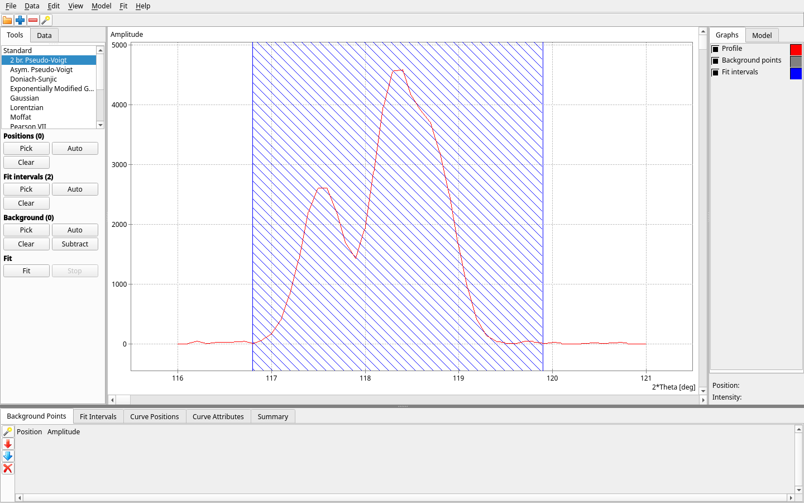
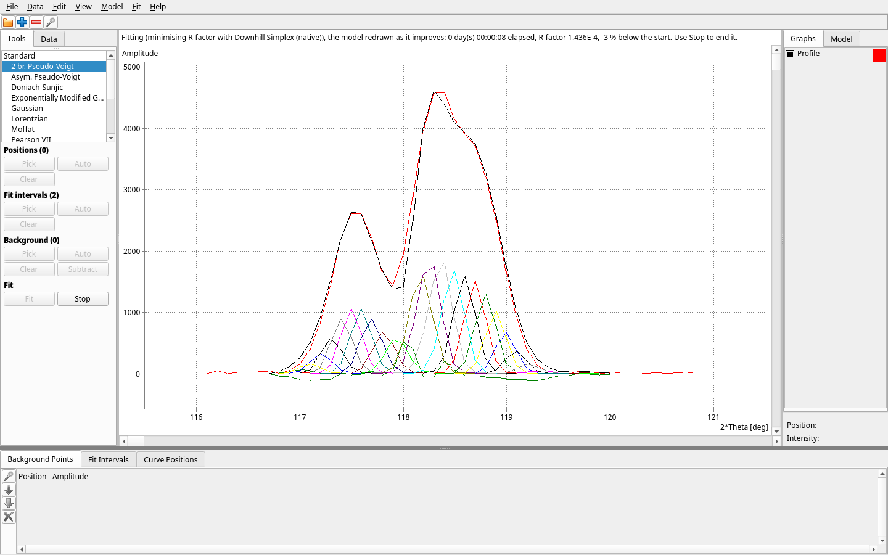
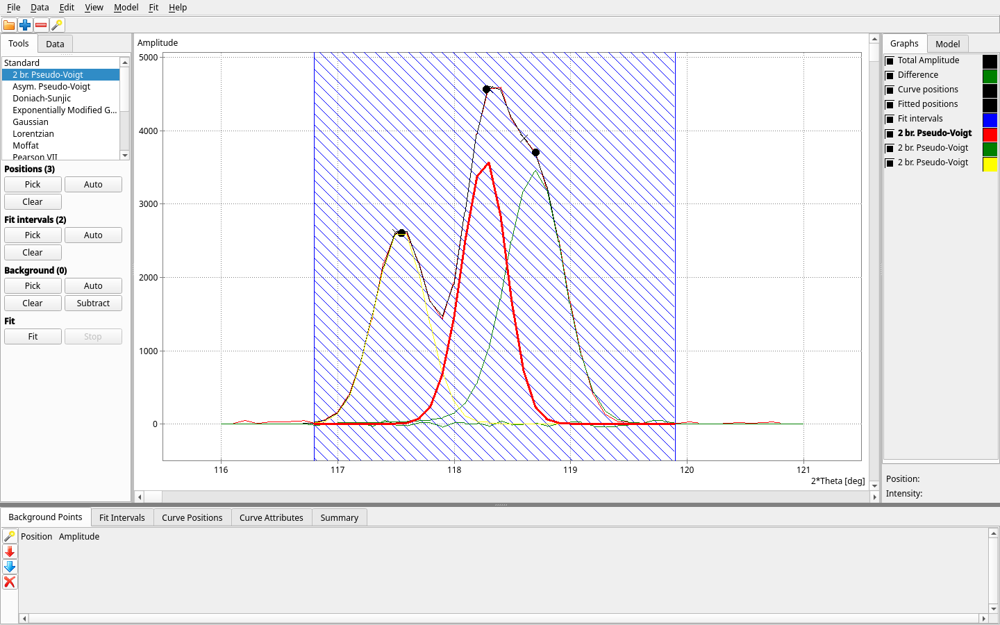

An interactive curve-fitting application. You load a data set, place curves on it, and the app fits them — one peak or a hundred, by hand or fully automatically.
Written in Free Pascal with Lazarus. It runs on Linux, Windows and macOS.
Automatic decomposition
One command, Fit → Automatically, turns a raw profile into a small set of curves. It subtracts the background and seeds a curve on every point of every peak. It then removes curves one at a time for as long as the fit stays within the accuracy you set, the maximum acceptable R-factor. What is left is the fewest curves that accuracy allows. You don't guess the number of curves or tune a penalty weight. On the two-peak sample that ships with Fit, 32 starting curves come down to 3 in well under a minute.
How to use it · How many curves does the profile need? — the rule, and how it compares with AICc, BIC and the other published methods.
Data from where it is published
File → New Project from Data Source finds a data set, downloads it and starts a project from it, without leaving the program. Three sources are in every download: the sample files installed with Fit, any web address, and a DOI, resolved through doi.org to the files of a Zenodo or figshare record.
Sources are contributed, not built in. A module in this repository,
Modules/open-data-spectra, adds the NIST Chemistry
WebBook and a JCAMP-DX reader; it is built as its own variant and is
not part of the downloads above.
Nothing has to be looked up first: where a source knows what it holds, it offers it by name and never shows the identifier it uses behind the scenes, and dates are picked from a calendar. The download runs in the client with what has arrived, how long it has taken and a Stop, and the file is read by the same loader that reads it from disk. A project embeds its data, so once it is made, fitting and reopening need no network at all.
Either way it is one RegisterDataSource line and no framework
file changed — the registry, and what is in it, is on
the extension points page.
Download
Built by CI from the sources in this repository. On macOS, build it
yourself: one script produces Fit.app and installs it.
| Platform | Download |
|---|---|
| Linux (x86-64) | Fit-linux.tar.gz — portable archive |
| Debian, Ubuntu (x86-64) | Fit-linux.deb — sudo apt install ./Fit-linux.deb |
| Fedora, RHEL, openSUSE (x86-64) | Fit-linux.rpm — sudo dnf install ./Fit-linux.rpm |
| Windows (x86-64) | Fit-windows-setup.exe — installer |
| macOS (Apple Silicon, Intel) | ./scripts/build-app.ps1 -Task all -Install |
Each link above serves the latest release · all releases
Fit is two programs: the desktop client, which has no fitting engine of its
own, and the compute server it talks to over HTTP. Every installed Fit
starts the server itself — the Windows shortcut, the Linux
fit command and Fit.app all launch through a wrapper
that starts a server on port 8787 when nothing answers there, and reuses one
that does. The portable Linux archive is the exception: start
fit_server before the client.
Building from source covers the script, the macOS bundle and a Lazarus IDE walkthrough with exact versions.
Watch it work
A project run through Fit → Automatically with Animation Mode on: curves are seeded on every point of the peaks and removed one at a time while the fit stays within the accuracy set. Played three times faster than it runs.



Where it stands
| Capability | State | Detail |
|---|---|---|
| Curve types | Implemented | 13 registered, including user-defined formulas |
| Data loaders | Implemented | 2 formats read (Diffraction profile, Two-column numeric) |
| Data sources | Implemented | 3 registered (Sample data, Web address, Published data (DOI)); 1 of them needs no network. A source declares what it asks for, and File → New Project from Data Source builds its steps from that. |
| Data export | Implemented | The curve parameters and the summary table, as tab-separated text (File → Export) |
| Compute backends | Implemented | Downhill Simplex (native), Levenberg-Marquardt (Python/lmfit). A remote fit_server is a transport choice of the native engine, not a separate engine. |
| Objectives | Implemented | 4, with curve-type compatibility derived from capabilities |
| REST API | Implemented | 14 verbs. Self-describing: the running server assembles its own OpenAPI 3.0.3 document at /openapi.json and renders it at /docs. Not committed anywhere - what a build serves is what that build does. |
| Module registration | Implemented | 13 seams; the framework ships no module |
| Argument axes | Implemented | Display-only: an axis never alters stored data or the fit |
| Charting component | Planned | Blocks per-point labels and point dragging |
| Scripting and batch runs | Planned | No way to drive a fit without the window |
| Parallel and GPU compute | Planned | Fit intervals are not run in parallel yet |
| Native installers and signing | Partial | Archives and .deb/.rpm are built; signing is off by default |
User guide
Everything the program can do, one chapter per part of it — the same text Fit shows under Help → Explain Everything, published from the same source, so the site and the program say the same thing. Contents.
- Getting started — What Fit is, The window and the compute server, The main window at a glance, A first fit, Fitting by hand, step by step, The Explain pane, Explain Everything, How much authority an explanation has, About Fit
- Projects and files — Projects, New Project, Open Project, Open Recent, Save Project, Save Project As, What a project file holds, The .fitproj file format, Where the data came from, Unsaved changes, Import Profile, Two-column data files (.dat), Reload Profile, Export Curve Parameters, Export Summary Table, Quit, Sample data, Command-line options, Log files, What Fit remembers between sessions
- Data — The profile, The Data table, Argument axes and units, Value axes, The logarithmic axis, Diffraction angles: Theta, 2 Theta and sin(Theta)/lambda, Wavelength, A custom argument axis, Working on part of the profile, Smoothing the profile, Data sources, Sample data, Web address, Published data (DOI)
- Model — The model, Choosing a curve type, Building the model from the Tools tab, Picking points on the chart, Curve positions, Fit intervals, The background, Subtracting the background, Background fraction, Background variation, The Model tab, The Curve Attributes table, Parameter kinds: fitted, shared, fixed and computed, Deleting a curve, Clearing the model, User-defined curves, Writing the formula of a user-defined curve, Parameter roles and starting values, Selecting and deleting user-defined curves
- Fitting — Fitting a model, Automatic decomposition, How many curves: the difference ceiling, Minimize Number of Curves, Minimize Difference, Stop, Why a fit command is greyed, The difference (R-factor), Max Acceptable Difference, Curve scaling, Minimizer, Loss Function, Weighting, What the fit will actually do, When a fit ends, Compute Server, Compute backends, Setting up the Python engine
- The window — The main window, The Tools tab, The chart, Zooming and scrolling the chart, View Markers, The Graphs tab, The Model panel, The Explain pane, Explain Everything, The tables at the bottom, The Background Points table, The Fit Intervals table, The Curve Positions table, The Curve Attributes table, The Summary table, The Edit menu, The status bar, Screen scaling, What the window remembers, Modules in the window
- Fit progress — Fit progress, Animation Mode
- Curve type — 2 br. Pseudo-Voigt, Asym. Pseudo-Voigt, Doniach-Sunjic, Exponentially Modified Gaussian, Gaussian, Lorentzian, Moffat, Pearson VII, Pseudo-Voigt, Skewed Gaussian, Step (erf), User Defined, Voigt
For developers
Fit is a framework as much as an application: a new curve type, data loader, optimiser or whole analysis vertical is added by registration, with no framework file changed. The developers' pages hold the architecture, the extension points and the how-tos, generated from the build itself.
Test data
A sample data set ships inside every download, under Data/, and
is offered by name under File → New Project from Data Source.
Separately: test_data.zip.
GPLv3-or-later. Documentation CC BY 4.0.